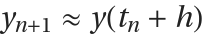
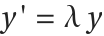
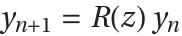
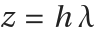

Runge–Kutta Methods
where is the time step and . Some methods include an embedded solution to facilitate error estimation and time step adaptivity:
Integreat represents Runge–Kutta methods using the function RK. There are a number of constructors, but some of the primary are
| RK[A,b,c] | constructs a Runge–Kutta method with coefficients A, b, and c. |
| RK[A,b] | constructs a Runge–Kutta method with c coefficients that are the row sum of A. |
| RK[A,b,c,bHat] | constructs an embedded Runge–Kutta pair. |
Once a Runge–Kutta method is constructed, a wide range of properties can be queried. We start by showing how to recover the defining coefficients.
| RKA[rk] | gives the coefficients of the Runge–Kutta method rk. |
| RKB[rk] | gives the |
| RKC[rk] | gives the coefficients of the Runge–Kutta method rk. |
| RKBHat[rk] | gives the embedded coefficients of an embedded Runge–Kutta pair rk. |
There are three options defined for RKB which play a core role in Integreat's support for advanced features like embedded methods, dense output, and per-stage properties.
| Embedded | False | whether to return the embedded coefficients |
| Stage | None | treat a stage as the solution |
| DenseOutput | False | how to evaluate dense output |
Options for RKB.
Use options for RKB.
Whenever appropriate, functions for computing Runge–Kutta properties use the same options as RKB. This facilitates, for example, plotting the stability region of an embedded method, generating the order conditions for a dense output solution, and checking the dissipation error of a particular Runge–Kutta stage. In the next sections, we will explore some of these capabilities.
Deriving order conditions for Runge–Kutta methods by hand is a notoriously tedious and error-prone. Integreat uses B-trees to automate and simplify this process.
| RKOrderConditions[rk,p] | generates the order condition residuals of rk up to order p grouped by order. |
| RKOrder[rk] | computes the order of accuracy of rk. |
| RKErrorA[rk] | computes the 2-norm of the principal error residuals of rk. |
Once order conditions are generated, functions like Solve and SolveAlways can be used to find solutions. The parameterization of a method plays a significant role in how well these functions perform. We demonstrate this in the next two examples where we seek a family of explicit, third order Runge–Kutta methods.
Here, the method is parameterized so that the row sum of is . When invoking Solve, the abscissae are left as free variables. We recommend this approach as it generally provides simpler and faster solutions.
With order conditions solved, free variables can be used to optimize other properties of the method. One common approach is minimizing the principal error.
Linear stability analysis considers the behavior of a Runge–Kutta method applied to the Dahlquist test problem . The numerical solution for this problem is , where
is the linear stability function and . The set of z∈ for which is known as the region of absolute stability. The size of the stability region determines the range of stable time steps a Runge–Kutta method can take.
| RKLinearStability[rk,z] | evaluates the linear stability function of rk at z. |
| RKLinearStabilityPlot[rk] | plots the linear stability region of rk. |
| RKAStable[rk] | returns an algebraic condition equivalent to rk being stable in the left half-plane. |
| RKAlgebraicallyStableQ[rk] | |
| RKAbsoluteMonotonicityRadius[rk] | computes the radius of absolute monotonicity, also known as the strong stability preserving (SSP) coefficient, of rk. |